PANORAMA GENERAL
El día 3 de Agosto del 2017 a las 16:15 aproximadamente, Eduardo Rentería transitaba sobre la ruta Mariano Abasolo (AB) – Manuel Acuña (AC) – Blvd. Constitución (CN) cuando fue impactado por una camioneta repartidora en el cruce de AB y CN.
El Informe de Accidente número 64983 presentado en el Tribunal de Justicia Municipal del Ayuntamiento de Torreón reporta que ambos vehículos transitaban sobre AC hacia el Norte, y “pasando el camellón central [del Blvd. Constitución, la persona en bicicleta] vira a la izquierda e impacta con su costado delantero izquierdo (manubrio [en] el cual se encuentran marcas de desgaste por fricción) contra el costado delantero y medio derecho del vehículo Nissan el cual circula en la misma orientación (se encuentran partículas del manubrio del vehículo bicicleta en el costado derecho).”
Croquis general
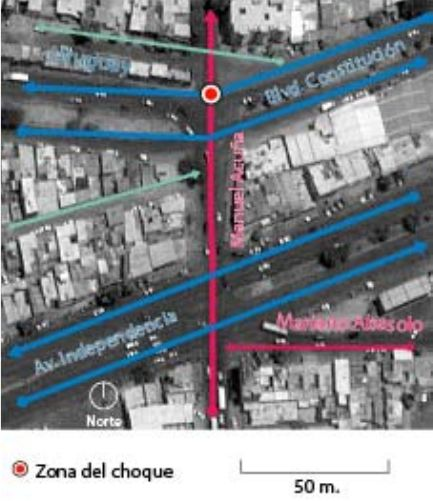
Céntrico/Google Earth
El conductor del vehículo Nissan atestiguó “circular por la C. Acuña y [al] pasar al camellón de Blvd. Constitución sentí un golpe en la puerta del copiloto y un golpe en el espejo lateral”. Con base en los testimonios del conductor del vehículo y de los agentes de tránsito presentes, se elaboró el croquis anterior.
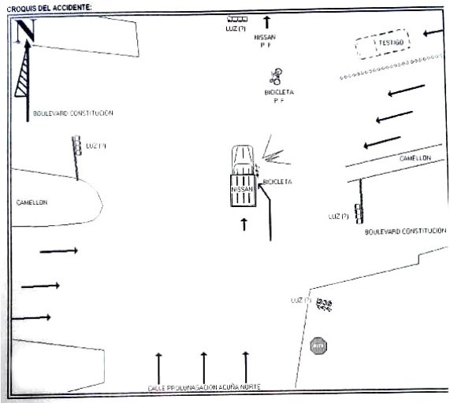
Croquis del accidente / Ayuntamiento de Torreón
No se cuenta con un testimonio por parte de Eduardo pues el golpe le provocó la pérdida de consciencia. Las lesiones lo mantienen hospitalizado al día de hoy, después de dos intervenciones mayores.
A pesar de esto, sabemos que parte de su ruta diaria para ir del trabajo a su hogar es por Mariano Abasolo, dobla a la derecha para tomar Manuel Acuña, y luego dobla a la izquierda para continuar por el Blvd. Constitución hacia el poniente.
PERTINENCIA DEL ANÁLISIS
Si bien no se cuenta con el total de los elementos, el presente análisis busca conocer el lugar del choque, los elementos que componen el espacio vial, y los factores en este que elevan la gravedad de los choques y atropellamientos. Una vez detectados estos factores, se hace un reporte de la intervención realizada el 25 de agosto y se enlistan recomendaciones para incrementar la seguridad vial en este corredor.
Con base en la filosofía de la Organización Mundial de la Salud asentada en el Decenio por la Seguridad Vial al cual México está comprometido, el primer responsable de la Seguridad Vial es el gestor del sistema, en este caso las autoridades municipales encargadas del estado del espacio vial, como son Tránsito y Vialidad, así como la Secretaría de Obras Públicas con apoyo del Instituto Municipal de Planeación (IMPLAN Torreón).
Este análisis está enfocado en este grupo de tomadores de decisiones y actores y propone los siguientes compromisos:
- Que en cada choque y atropellamiento (al menos donde hayan lesiones graves y muertes de peatones y ciclistas) se realicen análisis (peritajes) con un mínimo de información como la que a continuación se presenta, y que esta documentación sea pública, utilizando bases de datos públicas como Repubikla (Ciudata) y Mapillary.
- Que en donde ocurran accidentes de gravedad se lleven a cabo la obra necesaria para modificar al espacio vial, con el objetivo de mejorar la seguridad de todas las personas que lo transitan.
- Que con base en los datos estadísticos recopilados a lo largo del tiempo las intervenciones se vuelvan preventivas en vez de acciones reactivas.
Elaborado por Arq. Patricio Ruiz, consultor en diseño vial. Céntrico.
1. CALLE MANUEL ACUÑA
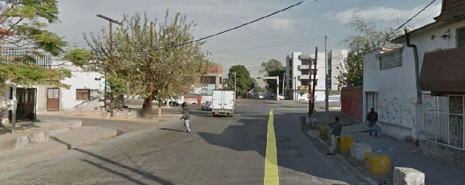
Google Street View
Elementos que componen la sección
La sección presenta un ancho aproximado de 20 metros entre paramentos, con banquetas en ambos lados de 3.0 m en mal estado (sin accesibilidad universal, sin continuidad, con escalones, y losas fragmentadas), y un arroyo vehicular de 15 metros, sin balizamiento, donde usualmente se utilizan dos carriles para flujo continuo y un tercero para acumulación cuando el espacio del carril de la izquierda y el central se saturan.
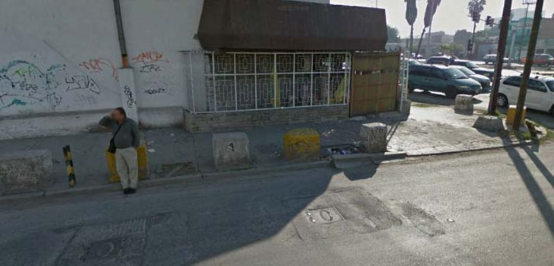
Pavimento del “cuarto carril” y elementos de contención en la banqueta oriente de Acuña. Google Street View.
El espacio que podría considerarse cuarto carril (no existen autos estacionados ahí) presenta una alta irregularidad en su superficie, con varios registros y pozos de visita, uno de ellos presenta fragmentación y un bache que expone las varillas de la subestructura. La banqueta oriente presenta una barda discontinua de concreto, aparentemente a manera de muro de contención.
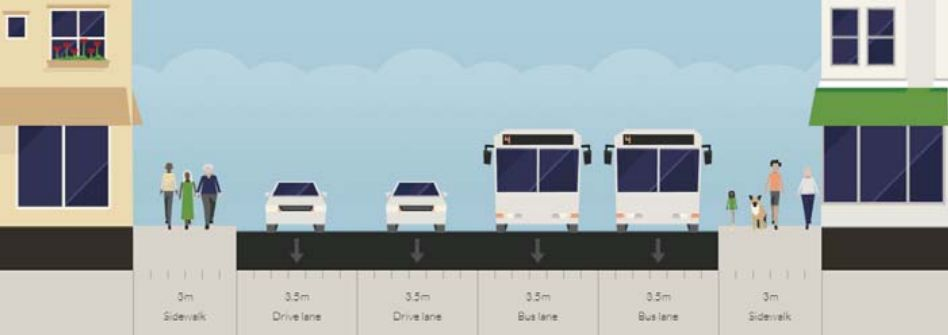
Céntrico/Streetmix.net
DINÁMICA DE LA CALLE
La calle Manuel Acuña (MA) es una calle de tipo colector que funciona como primaria por su alto flujo vehicular. Atraviesa de sur a norte el poniente del primer cuadro de la ciudad, y en el tramo estudiado presenta un muy alto volumen de autobuses de transporte público (Cerca de la mitad del volumen total en la hora de máxima demanda –HMD- encontrada durante los aforos), puesto que forma parte de una ruta muy utilizada hacia la ciudad de Gómez Palacio, primero por el Blvd. Constitución y luego por el puente de Ramos Arizpe.
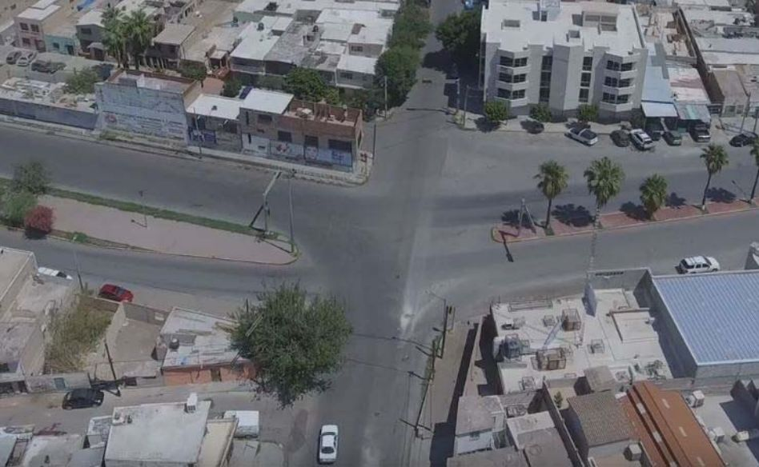
Intersección Acuña – Constitución / iDrone Laguna
Los autobuses suelen utilizar dos carriles para dar vuelta a la izquierda hacia Constitución. Como se puede observar en las fotografías aéreas, no existe definición del espacio vial más allá de las guarniciones y los semáforos pues el balizamiento y la señalética son inexistentes.
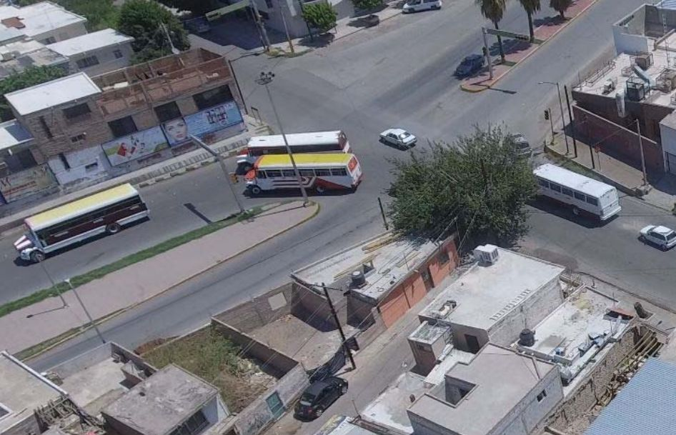
Conducta habitual: dos autobuses dando vuelta de manera simultánea en la intersección. Acuña – Constitución / iDrone Laguna.
BLVD. CONSTITUCIÓN
Elementos que componen la sección
El boulevard en esta intersección cuenta con una sección muy irregular (tanto por la falta de balizamiento, como de señalización) pero por su funcionamiento se identifica que cuenta con 2 carriles de aproximación y uno de desincorporación sentido oriente-poniente. En el sentido opuesto cuenta con dos carriles de aproximación y en ambos cuenta con cordón de estacionamiento.
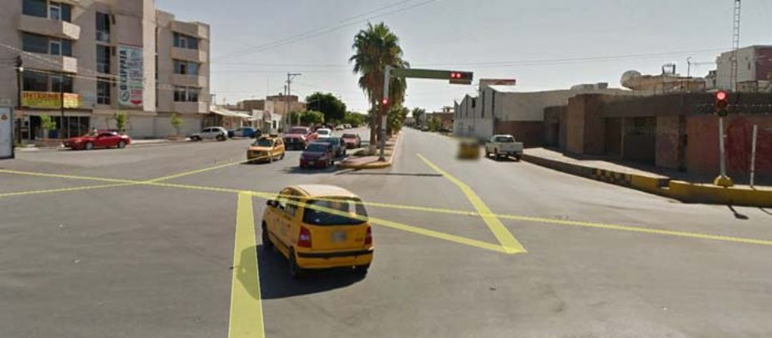
Vista del Blvd. Constitución hacia el Oriente. Google Street View
Puede apreciarse que la banqueta sureste presenta una elevación de más de 50 cm sobre el nivel del arroyo vehicular. Asimismo se percibe que la amplitud del crucero no brinda certeza en cuanto a los movimientos posibles, permitiendo el tránsito vehicular con trayectorias impredecibles y velocidades inadecuadas.
En la imagen siguiente se observa la banqueta Norponiente cuenta con elementos de contención.
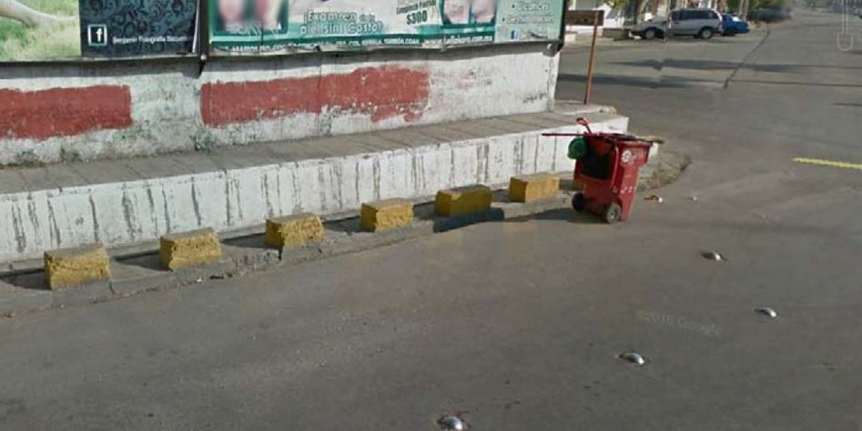
Vista de la banqueta y elementos de contención en la acera norponiente. Google Street View.
Estos elementos denotan la inseguridad percibida y experimentada en este espacio.
Dado que se conoce la ruta originaria del ciclista, de manera complementaria se analiza el cruce previo al del choque en búsqueda de factores que pudieron llevar a la colisión.
BLVD. INDEPENDENCIA Y MARIANO ABASOLO
Este crucero tiene una mayor amplitud que el primero, y los volúmenes vehiculares son altos dado que el bulevar es una de las avenidas principales de la ciudad.
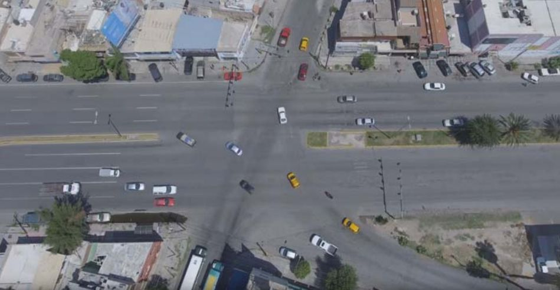
Crucero Independencia-Abasolo-Acuña. Es posible percibir la amplitud de los movimientos vehiculares, lo cual promueve altas velocidades / iDrone Laguna.
Independencia
Tiene una sección de 45 metros, aproximadamente, con un arroyo vehicular de 41 metros y un camellón que varía en su sección, dependiendo de la existencia de retornos y vueltas a la izquierda.
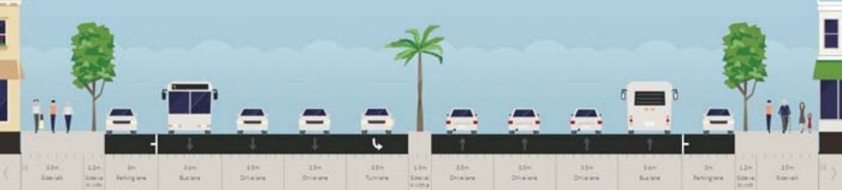
Sección de Av. Independencia / Céntrico Streetmix
Esta sección implica una distancia de cruce entre banquetas de al menos 17 metros. En el costado poniente la distancia es el doble pues la isla separadora no se proyecta hasta el cruce peatonal.
Mariano Abasolo
La calle Mariano Abasolo cuenta con una sección similar a la de Manuel Acuña, pero no cuenta con banqueta en el costado Norte.
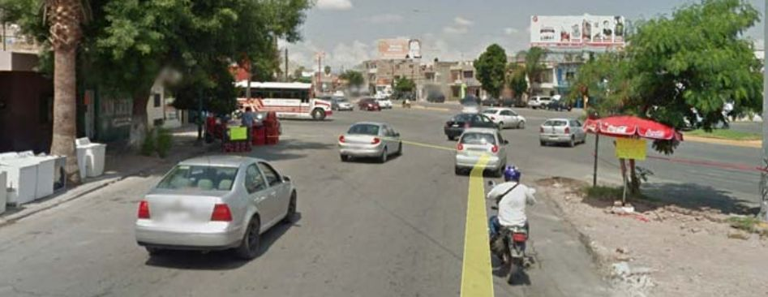
Vista a nivel desde Mariano Abasolo / Google Street View
Aunado a esto, una intersección en donde confluyen 4 sentidos distintos, eleva su complejidad, lo cual sin un diseño geométrico adecuado eleva el riesgo de accidentalidad. En concreto, los radios de giro holgados permiten los movimientos a velocidades más altas. Las geometrías reducidas en banquetas quitan visibilidad al peatón a punto de cruzar y quitan protección a ciclistas que se encuentran expuestos más tiempo durante cruce.
SEMAFORIZACIÓN Y SEÑALIZACIÓN
La falta de señalización promueve la confusión sobre los movimientos correctos para los vehículos y hace invisibles los espacios prioritarios para las trayectorias peatonales. Asimismo, de existir zonas de espera que brinden ventaja a peatones ciclistas, los riesgos de impacto serían menores.
En términos de tiempos semafóricos se detectaron dos fases asincrónicas:
Los tiempos no coinciden sino hasta cada 10 minutos puesto que los ciclos en Independencia sumaban 150 segundos, y en Constitución 120. La tabla muestra los tiempos originales y los tiempos propuestos:
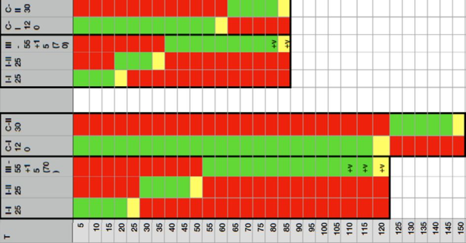
Tabla de tiempos semafóricos actuales y propuestos / Céntrico
Es recomendable contar con fases más cortas para priorizar a los cruces peatonales, reduciendo tiempos de espera para todos los usuarios.
ESTADO PROPUESTO (INTERVENCIÓN)
Modelo hipotético:
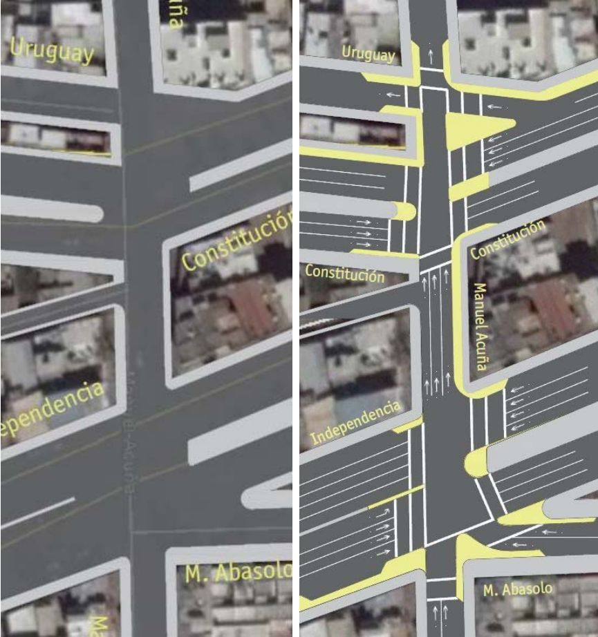
Céntrico / Imagen Satelital de Digital Globe
Con base en la información disponible se tomaron las siguientes decisiones:
- Hacer una isla separadora para la calle de Uruguay con un solo carril.
- Acortar todos los cruces peatonales
- Redistribución de los tiempos semafóricos, coordinación en ambos cruces.
- Reducir ancho de calle en Manuel Acuña entre los dos cruceros
- Proyectar las narices de todos los camellones hacia los cruceros
- Crear una bahía de parabús sobre Independencia al oriente.
- Hacer una isla de refugio en el camellón de Independencia
- Cerrar el radio de giro de Abasolo hacia Acuña
Resultados de la intervención del día 28 de agosto (conclusiones)
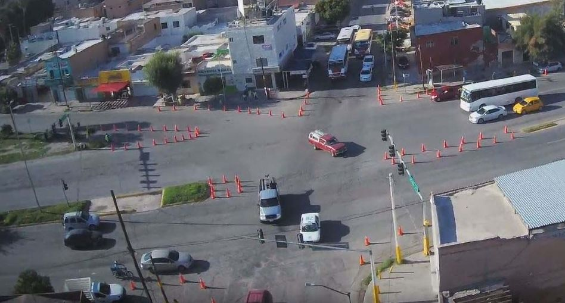
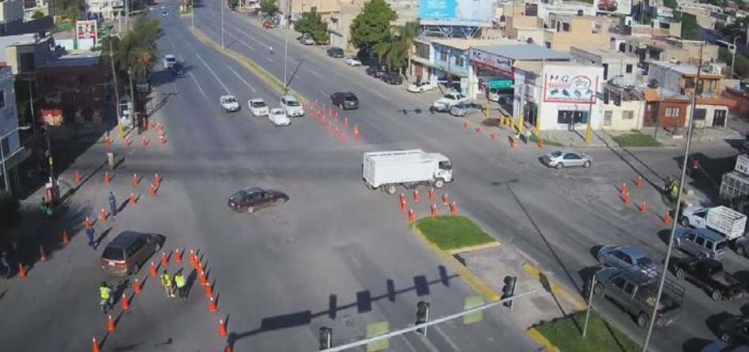
Vistas aéreas de la intervención en ambos cruces / Alan Raúl González Espinosa.
- En términos de impacto en el flujo vehicular, no se registraron aumentos en acumulaciones vehiculares.
- Se registraron reducciones de velocidad en los giros.
- Se probaron las fases semafóricas con apoyo del Ing. Enrique Robledo, quien realizó seguimiento y determinó dejarlas permanentemente.
- En recorridos a pie de las personas participantes cambió la percepción de seguridad.
Se observó que sería posible profundizar en la intervención geométrica realizando un separador en Manuel Acuña que delimite aún más los movimientos de los autobuses (hacia la izquierda, sobre Constitución), y la necesidad de regularizar las paradas de autobuses después de dar vuelta, sobre Constitución. La definición de estos espacios requeriría de un levantamiento más preciso de las dimensiones del lugar.
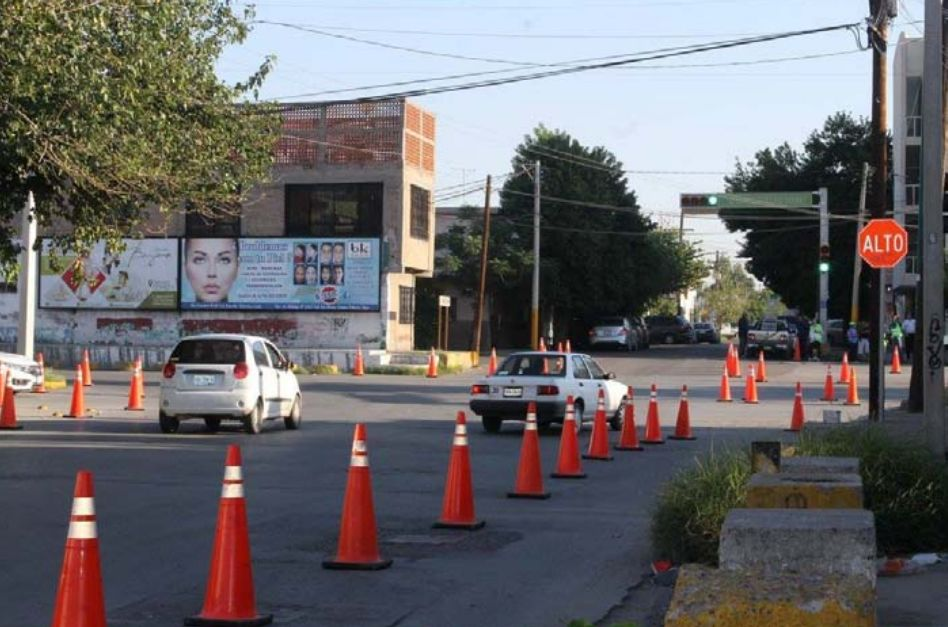
Espacio vial resultante que puede aprovecharse mejor / Ross Martínez.
Por lo anterior, se recomienda a las autoridades competentes proceder a la elaboración y construcción del proyecto geométrico de estos cruceros, enviando un mensaje a la población de responsabilidad y compromiso con la seguridad vial y la vida de todos las personas usuarias de la vía, dando prioridad a las más vulnerables.
Ciudad de México, a 1° de septiembre de 2017